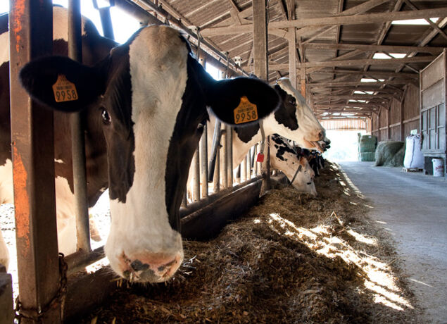
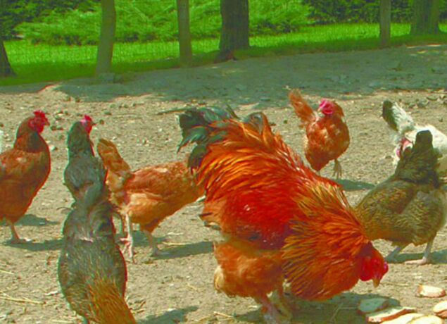
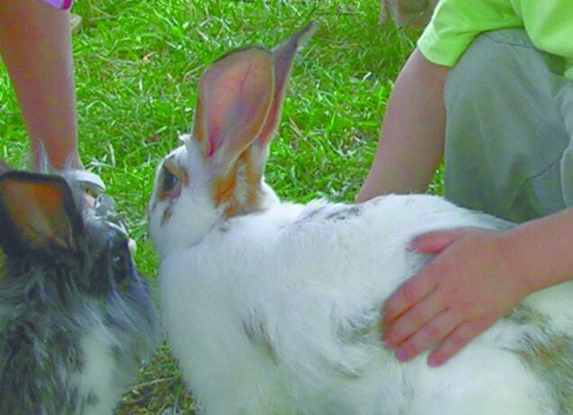
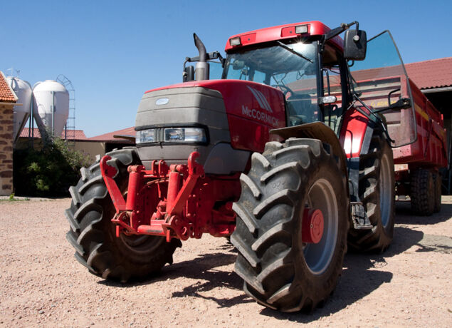
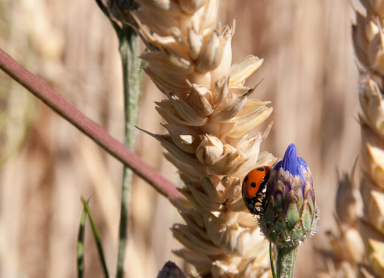
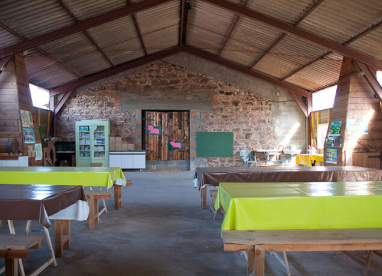
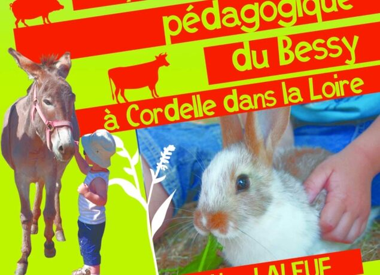

La ferme pédagogique du Bessy à Cordelle dans la Loire
Nourrissez-les, caressez-les, trayez une vache, donnez-leur le biberon… Une ferme laitière familiale, à 15 minutes de Roanne, qui ouvre ses portes aux enfants comme aux grands.

en bio
Une exploitation familiale, ouverte aux curieux
Au Bessy, Valérie, Christian et Benjamin Laleuf élèvent des vaches Prim'Holstein et Brunes des Alpes, en agriculture biologique. Le lait part à la Laiterie de la Côte Roannaise et à Biolait.
La visite n'a rien d'un décor : on découvre la vie de la vache laitière là où elle se passe vraiment, au milieu des veaux, des cochons, des chèvres, des moutons, des ânes, des lapins et de toute la basse-cour.
Vaches, veaux, moutons, chèvres, lapins, volailles, cochons et ânes
Touchez une carte pour découvrir ce qu'on fait avec eux pendant la visite.
Du pis de la vache au goûter
Une visite active, où les enfants participent à chaque étape plutôt que de regarder de loin.
La traite
On découvre la vie de la vache laitière et on essaie de traire.
Les soins
Nourrissage, biberons, brossage des ânes et caresses.
Le lait transformé
On fait son beurre et son fromage blanc, et on fabrique le pain.
La dégustation
On goûte ce qu'on a préparé, avant de passer à la boutique.
En famille
Des dates de visite sont proposées régulièrement, annoncées sur Facebook ou sur demande par SMS.
Groupes
Écoles, centres de loisirs, crèches, assistantes maternelles, instituts spécialisés. Salle pour pique-niquer et accès cars.
Anniversaires
Pour les 4-11 ans, de 14 h à 17 h, le mercredi et tous les jours des vacances scolaires : activités, goûter et gobelet souvenir.
Préparez votre venue en une minute
Choisissez votre formule, indiquez le nombre de participants : le tarif s'affiche aussitôt, et votre demande part toute rédigée par SMS ou par mail.
Les dates de visite en famille sont publiées sur la page Facebook de la ferme.






Venir à la ferme du Bessy
Coordonnées
- Adresse
- 531 route du Bessy, 42123 Cordelle
- Téléphone
- 04 77 64 93 33
- Portable / SMS
- 06 82 51 49 22
- gaec-laleuf@wanadoo.fr
- fermepedagocordelle
Boutique à la ferme
- Mercredi
- 17 h – 19 h
- Vendredi
- 17 h – 19 h
- Samedi
- 9 h 30 – 12 h
Ouverte aussi après les visites.
On vous attend à la ferme !
Une date en tête, un anniversaire à organiser, une sortie de classe ? Un SMS suffit pour réserver.